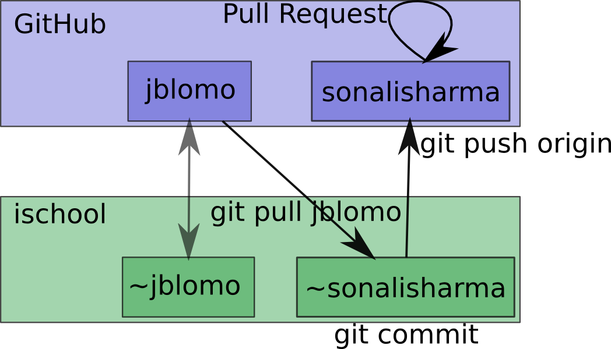

HW1
Table of Contents
- 1 HW1: Explore Browsers
- 2 What is git?
- 3 Why GitHub?
- 4 Setup GitHub account
- 5 Setup git repository on ischool server
- 6 Git Concepts
- 7 Walk through
- 8 Git Concepts
- 9 Git vs Directories
- 10 Git vs GitHub
- 11 Git vs GitHub
- 12 Connect it to GitHub
- 13 Share with us
- 14 Submit Homework
- 15 Going Forward
- 16 Demo
- 17 Homework 1
1 HW1: Explore Browsers
- Setup GitHub account
- Try out different browsers
- Submit assignment via GitHub
2 What is git?
- Revision control software
- Manage versions, changes
- Collaborate with others
3 Why GitHub?
gittool is standard in industry- GitHub provides best tools for sharing, commenting code
- This assignment will not have code, just practice submitting
3.1 Don't sweat notes
- In the future, if you're having trouble with git or GitHub, you may submit the assignment by email
- I think introducing you to git is useful, but it is not something I'm grading on, so I don't want it to affect your grade
4 Setup GitHub account
- Create a GitHub Account, making sure to use your .edu address
- Use GitHub/Edu to request a free micro plan: these let us use private accounts
- Setup a GitHub SSH Key
5 Setup git repository on ischool server
- On the server ischool.berkeley.edu
$ git config --global user.name Jim Blomo $ git config --global user.email jblomo@ischool.berkeley.edu $ git config --global push.default current $ git clone git://github.com/jblomo/webarch253.git webarch2013
- On the server, in the webarch2013 directory run
$ git remote rename origin jblomo
6 Git Concepts
- clone
- make a copy of another repository
- branch
- create an "alternate universe" to do an assignment
- checkout
- swtich to a given branch
- add
- mark file to be committed
- commit
- checkpoint the current state of the universe
- push
- make your code publicly available
- Pull Request
- submit assingment on GitHub
7 Walk through
- demo
7.1 Notes notes
- clone my repository
- branch, Start working on next week's slides
- add and commit the change, no spell check yet
- oh no! Sonali found a mistake in this week's slides
- Normally, I'd have to save a the file I was working on, but make sure not to publish it yet, and work on another file. lots of versioned directories would ensue
- git lets you use one directory, but has the concept of branches
- checkout back to published version - master branch
- create a branch to make fix
- push to github
- Pull Reqest
- now go back to next week's slides and spell check
- add, commit
- push to github
- Pull Request
8 Git Concepts
- clone
- make a copy of another repository
- branch
- create an "alternate universe" to do an assignment
- checkout
- swtich to a given branch
- master
- the "main" branch
- add
- mark file to be committed
- commit
- checkpoint the current state of the universe
- push
- make your code publicly available
- Pull Request
- submit assingment on GitHub
9 Git vs Directories
- Keeps a history of changes
- Less space
- Advanced features
9.1 Specifics notes
- Git repository is in one directory. Files in that directory will change
when you run
git checkout - changes: so you're not just relying on your crazy naming scheme for directories. Know what when why
- git only stores differences between branches
- merging, reverting, comparing differences, tagging, syncing
10 Git vs GitHub
- jblomo's GitHub: homework code & slides
- Directory on ischool: work and commit
- GitHub pushed copy
- GitHub Pull Request: homework submission
10.1 Don't merge notes
- During this class, you will almost never have to merge. Exception could be when working in groups on a Project
11 Git vs GitHub

12 Connect it to GitHub
- After you recieve your free micro account on GitHub, create a private repository called
webarch2013 - It will provide you with an SSH git path, let's call it PATH
- You must use the SSH PATH starting with
git@ - On the server, in the webarch2013 directory, run
$ git remote add origin PATH $ git push origin master
12.1 Push Failures notes
- If you see an error about authorization failure, it is possible you do not have the SSH keys availabile
- This can happen if you generated the keys on your laptop, but are trying to
push from
ischool - A solution is to copy the keys to
ischool:scp ~/.ssh/id* USERNAME@ischool.berkeley.edu:.ssh/
13 Share with us
- Hopefully you now have a private copy of my repository
- Add Sonali and me (users: sonalisharma, jblomo) as a contributor to your private repository
14 Submit Homework
- On the ischool server, create a branch called
hw1-browsers - Create a text file to write the solution, a simple editor to use is
pico git addthe filegit committhe changegit push originto put it on GitHub- on github, submit a "pull request" from the
hw1-browsersbranch to your master branch
14.1 Pull Requests notes
- Pull requests are a way of showing updates in a way that lets me provide comments, get notifications
- This is the first time I've tried it for class, so you're on the cutting edge. Hopefully it will work, give me feedback if it is not
15 Going Forward
- Other homework assignments will be completing code
- General work-flow:
- Sync with my repository
- Start a new branch
- Add required files
- push to GitHub
- Submit Pull Request
16 Demo
16.1 Commands notes
- Learn as much as you like at Try Git
- ssh ischool
git clone git://github.com/jblomo/webarch253.git webarch2013 cd webarch2013
16.1.1 For every new homework:
git checkout -b hw1-browsers master
echo Jim Blomo > $USER.txt
git add $USER.txt
git commit -m "my first homework"
git push origin
17 Homework 1
pico $USER.txt- Write two paragraphs:
- Your experience with web archtecture. Have you written HTML before? Written Javascript? etc.
- What are your favorite features from at least 2 browsers?
- Reading: